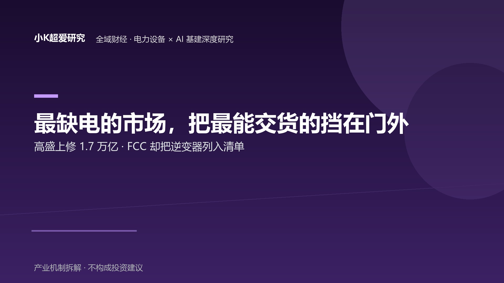

AI 缺电如果是真的，谁手里有牌，谁被挡在牌桌外？
牌桌分层 × 政治准入 × 产业瓶颈：高盛上修 capex 与 FCC 覆盖清单之间，隔着一局重新发牌的牌局
全域财经 · 电力设备 × AI 基建深度研究 2026-09-03 主轴：牌桌分层（谁有牌 · 谁在桌外）× 政治准入 × 产业瓶颈｜参照：高盛 capex 上修 × FCC 覆盖清单｜验证：三个物理量验三张牌
全文采用【事实】【机制】【推论】【待验证】【证伪】五级标记。事实仅使用可回溯公开来源；卖方预测口径、券商统计、事件库数据等非官方口径单独标注。
导语：AI 缺电不是新闻，"缺口由谁来填"才是
2026 年 9 月，全球 AI 基建的叙事停在同一个词上：缺电。
高盛在 2026-09-01 把 2027 年全球云厂商资本开支上修到约 1.7 万亿美元（原约 1.2 万亿），2029 年进一步看到约 2.1 万亿美元（原约 1.5 万亿）；预测 2030 年全球数据中心用电比 2025 年基线高出约 170%，增量相当于日本全年用电量。【事实：高盛预测，2026-09-01，经 Nuggets 转述；卖方预测口径，非已实现数据】
如果只写到这里，这是一篇"AI 缺电 → 电力设备大卖"的顺风稿。
但把时间窗拉平，同一个月还发生了另一件事：美国 FCC 将相关外国生产的电力逆变器设备纳入 Covered List（覆盖清单）——对被覆盖的新设备型号，其 FCC 设备授权将受到限制，从而影响其进入美国市场。【事实：路透社 2026-08-13/14；《人民日报海外版》2026-08-14 环球热点栏目；事件库三条独立采集，热度 105/105/100】
两条新闻来自两个完全不同的信息源：一个说"电力设备极度紧缺、快来交付"，一个说"交付能力最强的这批供应商，不能进场"——需求端在喊"我要更多"，政策端在说"但你不能进来"。
这篇研究的不是"AI 到底缺不缺电"——高盛自己都承认这是预测口径。真正值得研究的问题是：
如果缺口是真的，谁手里有牌？谁被挡在牌桌外？又是谁在发牌？
把这篇读成一局牌：政策主体是发牌员（手里的牌是准入清单），燃机寡头是庄家（手里的牌是排产表），各国设备商是玩家。中国玩家的困境不是"牌好不好"，而是有没有资格坐上最肥的那张桌。
一、先说时代背景：AI 的瓶颈，这已经是第三次转移
在进入矛盾之前，先给一个坐标：AI 周期的瓶颈不在原地，它在转移，而每一次转移都重新分配一次产业链的利润。【机制】
- 节点①（2023—2025）：算力需求爆发，瓶颈在先进制程与 GPU 供给——利润高度集中在"造芯片"的一侧。
- 节点②（2025—2026）：芯片供给逐步宽松（HBM4、先进封装 CoWoS 扩产），瓶颈从"有没有芯片"转向"芯片跑起来要的电"。
- 节点③（2026-09）：高盛上修 capex、主要燃气轮机厂订单排到 2031 年——资本外溢从芯片转向电网、燃机、储能、数据中心供电与散热。
看懂这三次转移，才知道为什么"缺电"会在这个时点成为全球 AI 叙事的主角：芯片可以扩产线，电网不能一夜之间重建；GPU 的交付周期以月计，大型燃气轮机的交付周期以年计。【机制】
这也定下了全文的坐标系：这一轮缺电，本质是供给与准入的约束问题，不是单纯的需求问题。
二、最缺电的市场，正在把最能交付的人挡在门外
2.1 需求端：缺口有多大，先看两个"紧"字
高盛报告给的是预测数字，真正"已经发生"的紧，在制造业的排产表上。
全球最大的燃气轮机制造商 GE Vernova（GE 能源业务 2024 年分拆独立上市），2026 年二季度财报披露：
- 在手订单 backlog 约 1,760 亿美元，订单同比增长 88%；【事实：GE Vernova Q2 2026 财报，2026-07-22】
- 燃气轮机积压 116GW（一季度为 100GW），目标是 2026 年底做到 125GW 以上；
- 数据中心相关订单年内累计已超 50 亿美元，是 2025 年全年的两倍多。
排产表末端的信号更硬：截至 2025 年底，GE Vernova 已售罄截至 2028 年的全部燃机产能，2029 年仅剩约 10%；2026 年年中开始接受排产到 2031 年的预订。【事实：GE Vernova 财报口径 + Solmar Capital 分析（2026）】
西门子能源同口径：单季燃气轮机订单 102 台创纪录，在手订单从 1,460 亿欧元增至 1,540 亿欧元（2026 财年二季度）。【事实：Siemens Energy FY2026 财报】
也就是说，缺电叙事最"实"的部分不是预测，而是：想要一台大燃机，现在下单，排产要到 2029—2031 年。 这是全球发电侧最紧的一环。
2.2 政策端：同一时间窗，FCC 在清单里加了一类设备
就在高盛说"全球电力设备极度紧缺"的同一个月份，美国监管在做相反的动作。
2026 年 8 月中旬，美国联邦通信委员会（FCC）将外国生产的电力逆变器和先进机器人设备纳入 Covered List。需要说明的是："列入清单""设备授权受限""无法进入市场"是三个不同的法律层级——被覆盖的设备型号会面临 FCC 设备授权受限，从而影响其进入美国市场的路径，但"列入清单"本身并不等于"自动禁售"，最终效果取决于授权程序与豁免安排。【事实：路透社 2026-08-13/14，三条独立采集含《人民日报海外版》2026-08-14 报道，事件库 105/100】
而在此之前一周（8 月 4 日），路透社独家报道 FCC 正在酝酿新规，拟限制中国新型数据中心组件进入美国市场，重点指向 AI 数据中心的光收发模块。【事实：路透社 2026-08-04 独家，事件库 110】
把两条时间线叠在一起，画面就出来了：
| 需求端（高盛 + 制造业排产） | 政策端（FCC） | |
|---|---|---|
| 时间 | 2026-08/09 上修 capex、排产到 2031 | 2026-08 把逆变器列入覆盖清单 |
| 方向 | "电力设备极度紧缺，快来交付" | "外国生产的逆变器，不能进场" |
| 对象 | 全球电力设备全链条 | 外国（尤其中国）电力设备供应商 |
| 性质 | 市场供需（已发生 + 预测） | 准入管制（已发生） |
2.3 机制：需求与准入撞在一起，缺口会被"政治定价"
【机制】
把 2.1 和 2.2 放在一起，会出现一个纯市场逻辑解释不了的现象：
一个极度缺设备的市场，正在用监管主动减少自己的合格供应商数量。
纯市场逻辑下，缺口越大，价格越高，越会吸引更多供应商进入——直到缺口被填平。这是教科书。
但准入管制会打断原本单纯依靠价格与供给扩张完成出清的路径，使部分缺口转化为"政治定价"——谁有资格供应，和谁能不能供应同样重要。
【推论】
- 燃机这类不在禁列、又排产到 2031 的设备，议价权继续向存量厂商集中；
- 被挡在门外的逆变器与（潜在）光模块，短缺不会消失，只会以"更贵、更慢、更少选择"的形式，转嫁给美国的数据中心运营商与电网投资方；
- 最终为这个矛盾买单的，不是被挡的供应商，而是美国本土的需求方——他们要用更高的成本、更长的等待，去够一个本可以由全球产能更快填平的缺口。
这里必须诚实标注：高盛数字是预测口径（2030 年 +170%、capex 上修到 1.7/2.1 万亿），FCC 禁令是已发生事实。两者不能画等号。正确的读法是：如果高盛的预测成立，那么 FCC 的禁令会让这个缺口更难填。 而不是断言"缺口一定出现"。
三、被挡出去的需求不会消失——它只会换一条路落地
3.1 外需这条路，正在越走越窄
角度二的判断如果成立（准入在收紧），那么"中国电力设备受益 AI 缺电"这个故事，主战场就不该押在美国。
第二章那两条 FCC 动作不是孤立事件，而是准入框架在扩围的注脚：从逆变器到（潜在）光收发模块，再到美国公用事业采购里持续升温的本土化（Buy American 类）诉求——"出海美国"这条最肥的通道，对中国电力设备商正在系统性收窄，不是某一类产品的问题。【推论：基于上述公开动作的方向性判断，非单一来源事实】
3.2 内需这条路，正在同时打开
但"外需被堵"只是半边。另外半边在国内，且时间窗高度重叠：
- 国家发改委、国家能源局印发《关于促进人工智能与能源双向赋能的行动方案》，"算电协同"成为市场热词；十五五时期算力网建设预计新增直接投资约 4 万亿元（国家发改委口径），数据中心"源网荷储"一体化成为新建项目标配方向。【事实：事件库 97；中国经济网 2026-08-14，事件库 100；具体项目落地节奏【待验证】】
把 3.1 和 3.2 画在同一张图上，是一堵一开：
外需：美国准入收紧（逆变器→光模块→电网侧）──► 通道变窄
│
内需：算电协同行动方案 + 4 万亿算力网 ────────► 通道变宽
▼
中国电力设备的需求，从"出海单线"变成"内外双线"
3.3 机制：这不是"出海不行了"，是"需求在重新分配"
【推论】
中国电力设备商面对的真实图景，不是简单的"美国不要了"，而是：
全球 AI 电力需求爆发 → 美国市场用准入把中国供应商排除在外 → 中国供应商的潜在产能不会自动消失，但订单、资本开支与产能配置会寻找新的落点：①国内算力网与电网建设；②美国之外的第三市场（中东、东南亚、拉美的数据中心与电网升级）。
需求在换通道，不是需求在消失——只看外需的人得出"出海逻辑破裂"，只看内需的人得出"4 万亿大放水"，两边都只对了一半。
这也是本篇认为"高盛看好中国电力设备出海"这个母题需要被修正的原因：它把 2026 年的中国电力设备讲成了 2018 年的光伏——靠单一海外市场放量。而 2026 年的真实约束是，最大的海外市场正在用监管说不。
四、但"中国电力设备"不是一篮子生意：最紧的那一环，中国不在牌桌上
4.1 把产业链拆开，先看"紧"在哪一格
"中国电力设备受益"这句话成立的前提，是先把电力设备拆开——因为"紧"不是均匀分布的。
从发电到用电，粗略拆成四格：
| 环节 | 代表设备 | 当前紧度 |
|---|---|---|
| ① 发电侧 | 大型燃气轮机 | 最紧（排产到 2029—2031） |
| ② 输配电侧 | 变压器、开关柜、高压开关 | 紧（订单双位数增长） |
| ③ 数据中心内部供电散热 | UPS、母线、液冷 CDU | 紧（系统级采购） |
| ④ 并网与电源转换 | 电力逆变器等 | 准入收紧（FCC 覆盖清单） |
有意思的是，最紧的那一格（①）和准入最严的那一格（④），中国都不在最好的位置；中国最有制造优势的②，恰恰是"把电送过去"的环节，而不是"把电发出来"的环节。【机制】
拆完四格，最该记住的是一个不等式：产业瓶颈 ≠ 中国优势环节 ≠ 利润最高环节——这三件事是分离的。看到"缺电"就直奔中国优势产业、顺手得出"最紧环节就是中国受益最大"，是这篇研究要拆掉的最常见错误：紧不紧决定供需格局，是不是中国优势决定谁能承接，利润归谁还要再叠一层议价权，三者不能画等号。
4.2 最紧的燃机格，牌桌上坐着谁？
燃气轮机是这轮缺电叙事里最硬的物理约束——但它的供给格局高度集中。
GE Vernova 是全球最大供应商（积压与排产数据见 2.1），其 CEO 斯特拉齐克（Scott Strazik）的产能路线是 2026 年 20GW → 2028 年 24GW → 2030 年 30GW 年产能——注意，他公开反复说的是"我们自己扩产都来不及"，从未把中国供应商列为扩产或竞争的变量。【事实：GE Vernova Q2 2026 财报 + CEO 公开表态；"从未把中国列为变量"属检索未见证据，非证伪，详见数据口径】
西门子能源是另一极：2026 年宣布对美投资 10 亿美元扩产（密西西比高压开关厂、北卡罗来纳恢复大型变压器与燃机制造、温斯顿-塞勒姆燃机部件扩产），新增 1,500 多个岗位；其 CEO 布鲁赫（Christian Bruch）的原话是："由于美国制造业复苏与人工智能增长，我们正经历一代人一次的成长机遇。"【事实：Gas Turbine World（2026）+ Siemens Energy FY2026 财报】
三菱重工等东亚厂商分食其余产能。全球燃机产能，基本就在这几家手里。
【推论】
对"中国电力设备出海"最冷静的表述是：
需求外溢是真的，但外溢落在传导链的下游——中国能接的是输配电设备（②）这类"把电送过去"的环节，而不是"把电发出来"的燃机（①）那一格。准确地说：在美国 AI 缺电最紧的燃机牌桌上，中国并不是主要供应方——中国有自己的燃机产业体系，只是美国大型 AI 数据中心新增燃机这一特定市场的供应格局，主要由 GE Vernova、西门子能源、三菱重工等把持。
4.3 中国在牌桌上的，是哪几格？
顺着 4.2 往下排，中国设备商的真实位置是：
- 输配电侧（②）——确定性最高的承接格：变压器、开关柜、高压开关是中国制造优势最集中的环节，也是全球电网改造（不只 AI 数据中心）的刚需。【事实：中国输变电设备出口结构与份额，行业统计口径【待验证：具体出口份额数字需补官方数据】】
- 数据中心内部供电散热（③）——被外资巨头卡位的格：这一格的全球龙头是 Vertiv（维谛），2026 年 3 月刚纳入标普 500；其 CEO 阿尔贝塔齐（Giordano Albertazzi）披露可服务市场上调到 750 亿美元，数据中心电力总容量预计 5 年内从约 20GW/年增至约 35GW/年。值得注意的是：Vertiv 增长引擎全在美洲与印度，中国区销售有机下滑约 9%——AI 基建最肥的数据中心内部环节，中国同样是净流出方。【事实：Vertiv Q2 2026 财报 + Data Center Frontier；中国区下滑为 Vertiv 中国（外资子公司）口径，仅作产业格局旁证】
- 并网逆变器（④）——被准入挡住的格：FCC 覆盖清单直接影响美国市场，只能靠内需（国内分布式与大型光伏、储能并网）与第三市场对冲。【事实：FCC 2026-08 覆盖清单】
一句话总结这张牌桌：越靠近"发电"的格子，越被欧美与东亚寡头锁死；越靠近"用电"与"并网"的格子，政治准入越敏感。中国制造最擅长的"中段"（输配电）确实受益，但它是外溢后的次生环节，不是最紧的一环。
4.4 价值捕获：缺口重分配后，议价权按什么排序？
【机制】
判断谁真正吃到这轮缺口，可以用一个简化议价框架：
议价能力 ≈ 技术壁垒 × 切换成本 × 供应集中度 × 客户依赖度
这不是完整 TCO 模型，只是用来比较产业链位置的简化工具。
| 环节 | 技术壁垒 | 切换成本 | 供应集中度 | 客户依赖度 | 议价倾向 |
|---|---|---|---|---|---|
| 大型燃气轮机（GE/Siemens/三菱） | 高 | 极高 | 极高 | 高 | 最强（排产到 2031 仍有定价权） |
| 输配电设备（变压器/开关柜） | 中高 | 高 | 中 | 高 | 较强（中国可承接的外溢格） |
| 数据中心内部供电散热（Vertiv 等） | 中高 | 高 | 较高 | 高 | 强（但中国不在内） |
| 电力逆变器（被 FCC 挡） | 中 | 中 | 中高 | 中 | 受准入约束（转向内需/第三市场） |
这张表想说的不是"哪个环节最紧"，而是：
谁把"紧"转化成了定价权，谁就真正吃到这轮缺口。燃机寡头用排产表锁死了定价权；中国设备商的议价权，来自输配电环节的制造规模与成本，而不是来自"最紧"本身。
五、反方情景：如果本文判断错了，会出现什么？
情景 A：准入松动，缺口回归市场逻辑
【待验证】
如果 FCC 对逆变器/变压器给出豁免或认证快速通道、或美国电网采购对中国供应商的限制显著放松——那么"被挡在门外"的前提失效：中国输配电与逆变器厂商将重新获得美国增量入口，第三章"换通道"论述降级，第四章需要修正的不是"燃机那一格"（中国本来就不在），而是"逆变器/光模块被排除"的前提。
情景 B：AI capex 显著下修，缺口本身缩小
【待验证】
如果 hyperscaler 资本开支 2027 年显著低于 1.7 万亿美元（上修被撤回）、数据中心用电增速显著低于 170% 预测（如低于 100%）、或燃机排产出现大面积取消/延期——那么"缺电"叙事整体退潮，本文的"缺口由谁来填"变成低优先级问题：届时缺不缺电、挡不挡人都不再重要，产业链回到算力需求定价，而不是电力约束定价。
六、证伪条件：哪些数据出现，本文就应该被推翻？
本文主动给出四条证伪条件：
① 若 2030 年数据中心用电增幅显著低于预测
若 2030 年全球数据中心用电较 2025 年基线的增幅显著低于 170%（如低于 100%），或 hyperscaler capex 2027/2029 年未达到 1.7 万亿/2.1 万亿美元 → 本文"硬缺口"的前提弱化，缺电命题不成立，挡不挡人就不再重要。
② 若 FCC 给出豁免或快速通道
若 FCC 后续对电力逆变器/变压器给出豁免或认证快速通道 → 本文"被挡在门外"的核心事实失效，第三章"换通道"与第二章"政治定价"论述需要整体重估。
③ 若中国电力设备出口未出现外溢
若中国电力设备出口份额与溢价在非美市场未出现提升（外溢订单未被承接），同时内需 4 万亿算力网落地节奏显著低于预期 → 本文"需求换通道不消失"的判断不成立，中国设备商只剩"外需被堵"的单边风险，没有任何对冲。
④ 若燃机排产不再紧张
若主要燃机厂出现产能过剩信号（排产周期明显缩短、2029—2031 订单大面积取消），说明发电侧瓶颈缓解 → 本文"最紧一环在燃机、中国不在牌桌上"的判断失去意义。
七、收尾的尺子：别看 capex，看三个物理量
前六章都在讨论判断。最后给一个读者可以自己验证的框架——这是本文最重要的部分：
高盛给的是 capex 预测，是"花钱的意愿"；预测可以上修也可以下修，可以讲故事也可以被打脸。真正不会说谎的，是物理量。【机制】
判断"AI 缺电"到底是从故事变成现实，还是在故事阶段就熄火，不看任何人的结论，看三个物理量：
① 数据中心实际并网容量——不是规划容量、不是开工容量，是真正并入电网、能跑起来的那部分。并网容量在涨，缺电才是真的；规划永远可以画大饼。
② 燃气轮机交付周期——现在下单到交货要几年？交付周期继续拉长，说明供需缺口在恶化；周期开始缩短，说明扩产开始追上需求。
③ PPA 签约量与价格——数据中心运营商愿意签多少长期购电协议、以什么价格锁定未来电力？真金白银的长期合同，比任何卖方预测都诚实——签约量持续增加、合同期限拉长、价格维持高位，说明需求正在进入长期资产配置阶段，而不仅是短期抢购。
这三个物理量，可以对应成一张"各自验证什么"的映射表——它不是为了这篇文章漂亮，而是为了让你在接下来每个季度都能拿它当检查单：
| 物理量 | 验证什么 | 对应牌 |
|---|---|---|
| 实际并网容量 | AI 数据中心有没有真正落地 | 现实牌 |
| 燃气轮机交付周期 | 发电侧供给是不是真的紧 | 时间垄断牌 |
| PPA 签约量与价格 | 数据中心愿不愿意为长期电力锁定成本 | 客户锁定牌 |
【推论】
capex 是情绪，并网是现实；订单是意愿，交付是约束；预测可以错，物理量很难集体说谎。
如果这三样东西在涨，那"AI 缺电"就是真的，本文讨论的准入与瓶颈问题就值得被严肃对待；如果这三样东西停滞，那 2026 年 9 月的"缺电热"就是又一个被高估的叙事。
结论：缺口是真的，但"由谁来填"已经被重新决定了
把全文压成一条产业链：
AI 算力爆发 → 瓶颈第三次转移到电力 → 高盛上修 capex、燃机排产到 2031（缺口信号）→ 但 FCC 同步把外国逆变器挡在门外（准入收紧）→ 准入管制打断单纯靠价格与扩产完成出清的路径，部分缺口转化为"政治定价" → 被挡供应商的订单与产能配置转向内需与第三市场 → 而最紧的燃机格被 GE Vernova / 西门子能源 / 三菱锁死，中国不在牌桌上 → 缺口最终由谁来填？
所以，这篇研究的核心句不是"AI 缺电、中国电力设备受益"。
而是：
"AI 缺电"是真的，"中国设备受益"也是真的——但这两句话之间，隔着政治准入、产业瓶颈和国内投资三道闸。
翻译成牌局语言：需求是真的，缺口是真的，但谁吃到这轮缺口，不取决于谁最能造设备，取决于你在哪张桌上、手里是什么牌、发牌员是谁。最肥的美国燃机桌上没有中国；中国的牌，要在全球扩容桌与国内算力桌上去打。
判断这轮缺电叙事的真假，不需要听高盛的，也不需要听任何人的——看三个物理量就够了：实际并网容量、燃气轮机交付周期、PPA 签约量。它们验的是三张牌：现实牌、时间垄断牌、客户锁定牌，哪张是真的。
三张牌的读数，共同决定一个问题的答案：缺口最终落在谁手里——握着排产表的庄家，发牌的规则制定者，还是换了桌、正在等订单兑现的中国玩家。
数据口径与来源说明
- 高盛预测：2026-09-01，经 Nuggets 转述。2030 数据中心用电较 2025 基线 +170%、2027 capex 上修至 1.7 万亿美元（原 1.2 万亿）、2029 至 2.1 万亿美元（原 1.5 万亿）。卖方预测口径（证据等级 B），非已实现数据，文中已标注。
- FCC 电力逆变器覆盖清单：路透社 2026-08-13/14 +《人民日报海外版》2026-08-14 环球热点栏目，事件库三条独立采集（热度 105/105/100）。
- FCC 拟限制光收发模块：路透社 2026-08-04 独家，事件库 110。
- GE Vernova 经营数据：Q2 2026 财报新闻稿（2026-07-22）：backlog 1,760 亿美元、燃机积压 116GW（Q1 100GW）、目标年底 ≥125GW、数据中心订单年内超 50 亿美元、产能 20→24→30GW 路线；售罄 2028 前产能、2029 剩约 10%、排产到 2031 见财报口径与 Solmar Capital 分析（2026）。
- 西门子能源数据：FY2026 财报（单季 102 台燃机创纪录、backlog 1,460→1,540 亿欧元、美订单占 Q1 燃机约 40%）+ Gas Turbine World（2026）对美 10 亿美元投资报道。
- Vertiv 数据：Q2 2026 财报（营收 32.8 亿美元、中国区有机下滑约 9%）、TIKR 投资者日报道（TAM 750 亿美元、数据中心电力容量 20→35GW/年）。
- 国内政策：发改委/能源局《关于促进人工智能与能源双向赋能的行动方案》（事件库 97）；十五五算力网新增直接投资约 4 万亿元（中国经济网 2026-08-14，事件库 100）。
- 人物及任职信息：GE Vernova CEO 斯特拉齐克、西门子能源 CEO 布鲁赫、Vertiv CEO 阿尔贝塔齐，均核实至 2026 年 9 月（见
各行业重要人物/档案）。 - 【待验证】字段：中国输变电设备出口份额的具体官方数字；算电协同具体项目落地节奏；FCC 对光收发模块新规的最终落地形态。
- 文中所有"缺口由谁来填/政治定价/换通道"类表述均为【推论】，基于上述事实的机制推演，非已发生事实。
合规声明
本文为产业机制与全球政策研究，不构成投资建议，不对任何公司或个股进行买卖方向判断。文中公司主要按产业类别与全球竞争格局讨论，涉及境外上市公司（GE Vernova、西门子能源、Vertiv 等）仅作产业格局参照，不涉及 A 股个股代码及具体交易建议。
股市有风险，投资需谨慎。